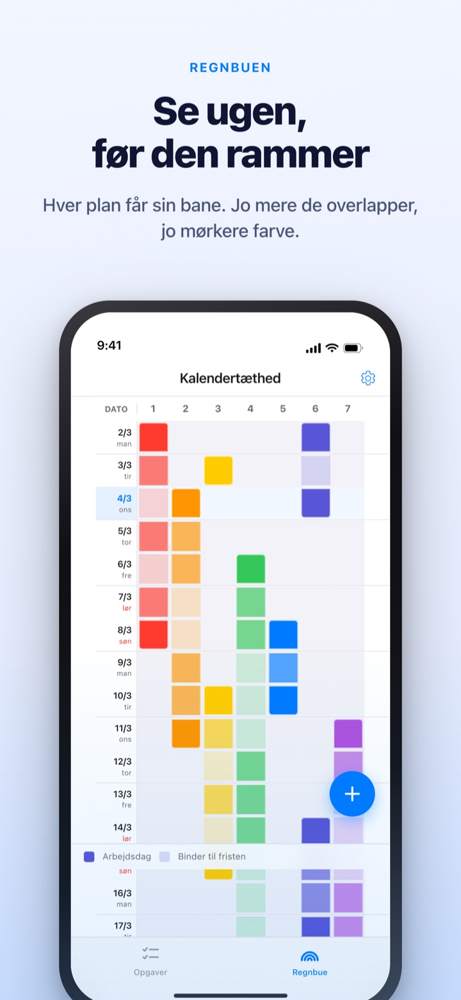
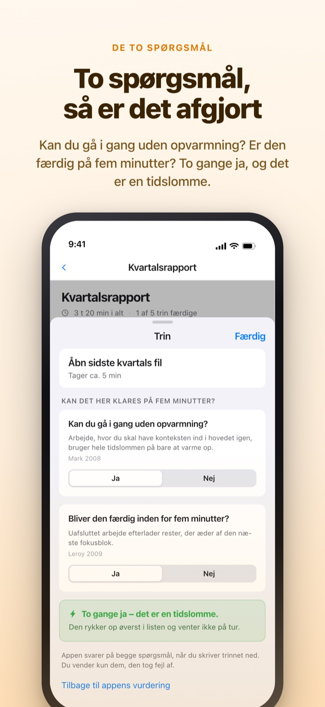
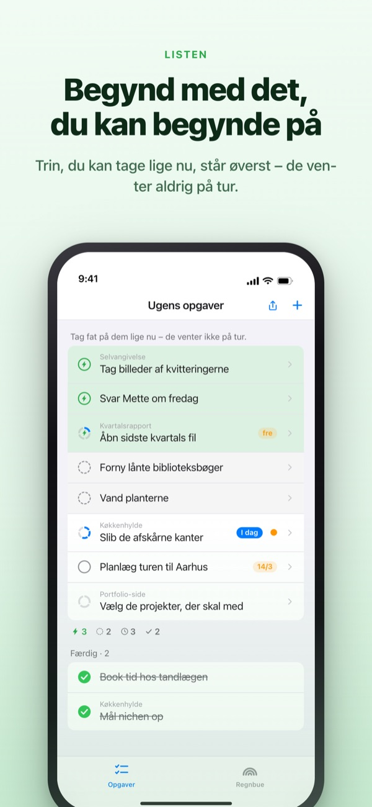
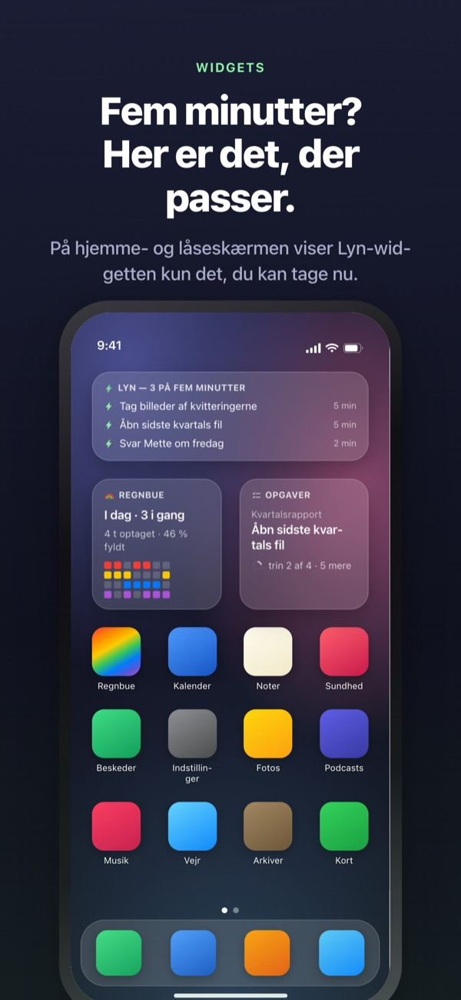

Se den travle uge komme.
Brug de fem minutter, du får.
Jo mere dine opgaver overlapper, jo dybere farve får regnbuen. Del en stor opgave op i trin, så venter det trin, du kan klare i en lomme, allerede øverst.
Regnbuen, opdeling af opgaver, timeren og synkronisering med Mac er gratis.

Prøv selv
„Kvartalsrapport Q3“ er allerede delt i fem trin. Vælg et trin, skift tiden, eller vend et svar. Kun et trin med ja til begge spørgsmål bliver en tidslomme, du kan nå på fem minutter.
Ser kalenderen tom ud, men ugen tager alligevel pusten fra dig?
En kalender viser, om noget er planlagt, ikke hvor meget der ligger oven i det. At tre deadlines lander i samme uge, opdager du ofte først midt i den, og de fem minutter imellem går med at læse to do-listen igennem. Rainbow of Desire tegner ugen som et gitter, farver overlap mørkere og lægger trinene til små huller til side.
To spørgsmål, så er det afgjort
Når du deler en stor opgave op, får hvert trin to spørgsmål. Kan du gå i gang uden opvarmning? Bliver den færdig inden for fem minutter?
Kun to gange ja giver en tidslomme. Appen svarer først ud fra tid og ordlyd, og du vender kun et svar, når det er forkert.

Et hul i kalenderen? Kig øverst
Swipe en opgave til højre for at give den et lyn, så springer den køen over og står øverst. Du behøver ikke læse hele listen.
Om trin venter på hinanden, bestemmer du én gang pr. gruppe. I rækkefølge viser det første åbne trin, Vilkårlig rækkefølge den tidslomme, du kan tage nu.

Synligt uden at åbne appen
Timeren tæller ned til det øjeblik, en begivenhed slutter, og tiden tilbage vises også i Dynamic Island og på låseskærmen.
Widgets til hjemme- og låseskærm viser, hvad du er i gang med, hvad der passer i fem minutter, og ugens regnbue. (Widgets er Pro)

Kom i gang i tre trin
- 1
Tegn en begivenhed
Hold fingeren på et tomt felt på startdagen, og tryk på slutdagen. Så står der en streg i regnbuen.
- 2
Del de store opgaver
Tryk på en opgave, skriv trinene, og vælg en tid. De to spørgsmål svarer appen på først.
- 3
Kig øverst, når der er hul
Tidslommer og opgaver med lyn samles øverst uden at vente på tur.
Det, du møder på skærmen
- Mørkt felt · lyst felt
- dage, du faktisk arbejder på det, og resten frem til slutdatoen
- En fuld række
- en dag med så meget samtidig, at én forsinkelse skubber hele dagen
- Tidslomme
- ja til begge spørgsmål; tag den, når der er fem minutter
- Kort fokusblok
- ingen opvarmning, men bliver ikke færdig i en tidslomme; klares i ét stræk
- Fokusblok
- kræver opvarmning eller tager 45 minutter eller mere; læg den i reserveret tid
- Lyn
- dit eget „klar nu“-mærke; springer op øverst
- I rækkefølge · Vilkårlig rækkefølge
- om trin venter på hinanden, valgt én gang pr. gruppe
- Tidsregnskab
- ugens opgørelse: det tilbageværende, vundet tid og restitution, holdt adskilt og aldrig lagt sammen
Tid lægges sammen nedefra: en opgaves tid er summen af dens trin.
Det, du har brug for i dag, er gratis
Gratis
- Regnbuen (gitter over hvor travlt der er)
- Opdeling i trin og de to spørgsmål
- Lyn og rækkefølge for trin
- Timer i Dynamic Island og på låseskærmen
- Synkronisering med Rainbow Craft på Mac via iCloud
- Tidsregnskab for de seneste to uger
Rainbow Plus · Rainbow Pro
- Plus: statistik over begivenheder og tidsregnskab længere tilbage end to uger
- Pro: alt i Plus samt widgets til hjemme- og låseskærm
- Pro: import fra Kalender, der hele tiden vises
- Pro: deling af begivenheder, kun visning
- Pro: låser også Rainbow Craft Pro op på Mac
Hver som årsabonnement eller engangskøb for altid
Du betaler kun for at se tilbage på tidligere uger og for at tage ting med ud af appen. Har du købt Pro tidligere eller et månedsabonnement, er du stadig Pro.
Spørgsmål og svar
Skal jeg have en konto eller iCloud?
Ikke hvis du bruger den alene. Der er ingen tilmelding, og alt bliver på din enhed. Til andre enheder, Mac-appen eller deling skal du logge ind på iCloud.
Appen har svaret forkert på et spørgsmål.
Tryk på trinnet, og skift mellem Ja og Nej. Dit eget svar går altid forud. Tryk på „Tilbage til appens vurdering“ for at give det tilbage. Et trin uden tid tæller ikke som tidslomme, fordi appen ikke ved, om det bliver færdigt på fem minutter.
Kan jeg dele med andre?
Med et invitationslink deler du dine begivenheder, så de kun kan ses (Pro), eller du åbner en opgaveliste, som du og de inviterede læser og skriver i sammen. Alle med linket kan være med, så send det kun til dem, det er tiltænkt. Det har intet med Apples Familiedeling at gøre.
Vises mine kalenderbegivenheder?
Begivenheder fra de kalendere, du vælger, vises i regnbuen og i dagsoversigten (Pro). Appen læser kun og skriver intet tilbage.
Kan jeg afkrydse fra en widget?
Widgets er kun til visning. Tryk på en, så åbner dine opgaver direkte, og kryds af der.
Skal Mac-appen købes for sig?
Rainbow Craft er en selvstændig macOS-app i Mac App Store. På samme iCloud-konto synkroniseres opgaver og ugeplaner af sig selv, og det koster ingenting.
Er mine ældre opgaver der stadig?
Ja. Opgaver, trin og de tider, du har sat, bevares. Mærker fra de gamle startbetingelser vurderer appen igen med de to spørgsmål.
Hvor gemmes mine data?
Der er ingen server. Alt ligger på din enhed og i din egen iCloud, hvor udvikleren ikke kan se det. Ingen reklame-id, ingen lokalitet. Appen sender kun anonym brugsstatistik, som ikke kan føres tilbage til dig, og som kan slås fra i Indstillinger.
Hvordan opsiger jeg et abonnement?
I Indstillinger > Apple-konto > Abonnementer. Det fornyes til samme pris, medmindre du opsiger senest 24 timer før periodens udløb. For altid er en engangsbetaling.
Sidder du fast, eller virker noget forkert? Skriv til leeo@kakao.com. Du finder også en kontaktmulighed i appens indstillinger.